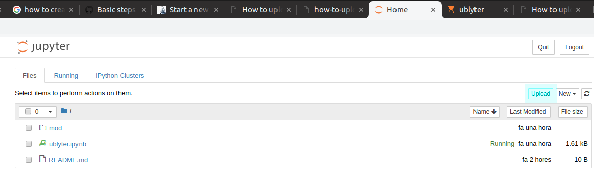

How to upload the model spreadsheet into the notebook
How-to upload a model ODF spread-sheet into the notebook
- Go the notebook Home page
- Enter the folder "mod"
- Click on the button Upload, on the rigth upper side of the page, next to the button "New". This will open a window showing your file system.
- Look for the ods file you have modified and select it.
The figure below shows how the notebook home page looks like and where the Upload button is located:
